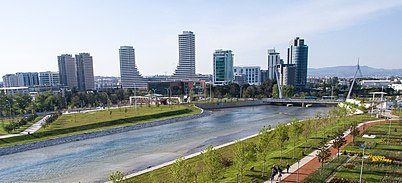

Bursa (Yunanca: Προῦσα Prussa, Latince: Prusa), Türkiye'de Bursa ilinin merkezi olan şehirdir. Nüfus bakımından İstanbul, Ankara ve İzmir'in ardından Türkiye'nin 4. Büyük kentidir. Aynı zamanda Marmara Bölgesi'nin İstanbul'dan sonraki en büyük ikinci şehridir.
Ekonomik açıdan Türkiye'nin en gelişmiş kentlerinden biri olan Bursa doğal ve tarihsel zenginlikleriyle de önem taşır. Bursa'da en çok Osmanlı İmparatorluğu'nun kuruluş dönemine ait tarihi eserlerin bulunmasının sebebi ise, Bursa'nın Osmanlı Devletinin ilk başkenti olmasıdır. Bursa alışveriş merkezleri, parkları, müzeleri ve çarşısıyla bölgede öne çıkar. Ayrıca Bursa Marmara bölgesinin İstanbul'dan sonra gelen ikinci büyük şehridir. Türkiye'nin en önemli birkaç sanayi kentinden biridir. Şehir İstanbul'dan sonra en büyük ikinci ihracatı gerçekleştirmektedir. Şehrin futbol takımı Bursaspor 2009-10 sezonunda Süper Lig şampiyonudur.
Bursa, sanayi istatistiklerine göre Türkiye'nin en büyük sanayi kenti ve otomotiv üretim merkezidir. CNN International tarafından Türkiye'nin Detroit'i yakıştırması yapılmıştır. Tofaş-Fiat, Renault, Peugeot, Karsan, TOGG, Bosch, Cobra Güleryüz ve Akia otobüs fabrikaları Bursa'da bulunmaktadır. Aynı zamanda binek ve ticari araçların yan sanayi ve yedek parça fabrikalarının büyük kısmı Bursa'dadır. Bursa'nın otomotiv sanayisi bakımından Türkiye tarihinde bıraktığı izler dolayısıyla TOFAŞ tarafından şehir merkezine yapılan TOFAŞ Anadolu Arabaları Müzesi de kentin simgelerinden biri haline gelmiştir.
